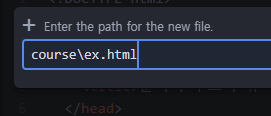
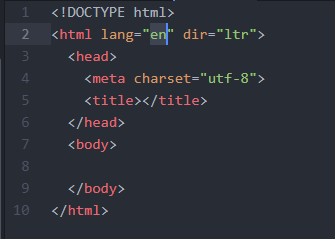

*ATOM에서 파일 확장자를 ㅁㄴㅇㄹ.html로 한 뒤 <html>을 작성하고 enter키를 누르면 기본 형식이 등장합니다.

이렇게 파일을 만드신 후, html을 치면 하단에 html과 관련된 목록이 뜨고 화살표가 된 곳에 맞춘 후 enter키를 누르면

이렇게 html의 기본 틀이 자동으로 작성됩니다.
<html lang="en" dir="ltr"> 이 부분에서 en을 ko로 바꾸셔도 무방합니다.
HOME
WEB1. HTML & Internet
◀ PREV
NEXT ▷